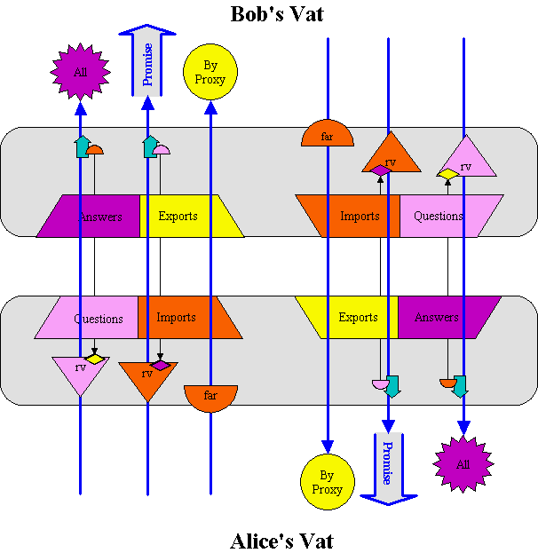

| |
CapTP: |
||||||

This (admittedly busy) diagram shows all the state implied by the CapTP protocol for an inter-vat connection (a connection between two vats). Notice the symmetry: The top half is identical to the bottom half rotated 180 degrees. Each half represents one of the vats participating in the connection. Let's say the bottom half is Alice's vat and the top half is Bob's vat.
The purpose of CapTP is to stretch object references between vats so that they follow the same dynamic capability logic as they do within a vat. These object references are shown as the long blue arrows above. Indeed, for many (not all!) purposes the programmers may ignore machine boundaries and program as if they simply have a uniform sea of objects constrained to follow capability rules.
This property is known as Semi-Transparent Distributed Object Programming. It is illustrated above by enclosing the mechanisms internal to each side's Pluribus protocol handlers inside the large grey rectangles. Ignoring the insides of the rectangles, we see on the right object reference tails held by (unshown) objects in Bob's vat pointing at various objects in Alice's vat, and vice versa on the left. To understand the Pluribus protocol, you must understand the insides of the grey rectangles. However, to understand and use E, you do not. You need only understand how the semantics of inter-vat references differs from the semantics of intra-vat references. (Far references are shown crossing the boundaries because they do appear in the inter-vat semantics of E.) Below we see the subset of the diagram relevant to the semantics of E.
The trapezoids in the first diagram are the four tables. They are integer indexed tables, and come in pairs. A particular index number in the Imports table represents a blue object-reference arrow leaving this vat for the other vat. The same number in the other's Exports table must correspond to the entry into that vat of the same reference arrow. Likewise, with a reference leaving via an index in a Questions table and entering at the same index in the other vat's Answers table. This difference in direction is the distinction between the two rows of the following matrix:
|
We generate |
Remote end generates OID and pos |
|
|---|---|---|
|
Outgoing remote ref.
We have tail, remote has head |
Questions |
Imports
t > 0 |
|
Incoming remote ref.
We have head, remote has tail |
Exports
h > 0 |
Answers
h < 0 |
There are four tables rather than two because of the orthogonal distinction that separates the columns. In order for a reference to span the inter-vat gap, one side, let's say Alice's vat, must first allocate an index for it in one of her tables, and then inform Bob's vat so Bob's vat can make the corresponding entry in the corresponding table. Bob's vat, of course, is doing likewise; so the two vats must be sure their allocations don't collide.
When Alice's vat allocates a place for the incoming (arrowhead) end of an object reference, she uses her Exports table. When Bob's vat hears about this, he follows her lead and makes the corresponding entry in his Imports table. When Alice's vat allocates a place for the outgoing (tail) end of an object reference, she uses her Questions table. Bob's vat again follows her lead and makes the corresponding entry in his Answers table. When would Alice find herself allocating an arrowtail vs an arrowhead? Let's say that Alice already holds a remote reference to Bob and a local reference to Carol (implying that Carol lives in Alice's vat as well), and Alice decides to send Carol to Bob in a message:
def result := bob <- foo(carol)
Alice's vat would allocate an index for Carol in her Exports table, since the reference to Carol must be pointing into Alice's vat. On the other hand, Alice's vat would allocate an index for result in her Questions table, since the outgoing reference to the result is in Alice's vat, but it is a RemotePromise (a kind of Promise) for a result whose value will be determined by Bob's response to the message.
Unless stated otherwise, all text on this page which is either unattributed or by Mark S. Miller is hereby placed in the public domain.
| |
|
report bug (including invalid html)
|
||||||||